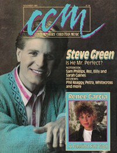

Steve Green
 December 1986 Christian Life |
 November 1988 CCM |
Media coverage:
- Dec 1985 in MusicLine "Interview: Ministering With Music"
- Feb 1986 in Christian Herald "Singer Steve Green: Heart to Heart With God", by Sharon Anderson
- Dec 1986 in Christian Life "Steve Green", by Elisabeth D Gilland
- Jan 1987 in Eternity "The Arts: Big Names, Big Money", by Dr. Richard J. Stainslaw
- 1987 in Premiere "Steve Green"
- Dec 1987 in Fundamentalist Journal "Profile: Ministry is Foremost", by Raymond J. Catogge
- Jul 1988 in Religious Broadcasting "Music: Ministering Faithfully"
- Nov 1988 in CCM "Dispelling Myths", by Loren Paul Decker
- 4 Nov 1988 in Christianity Today "Arts: Artbriefs: Praise The Lord and Pass The Salsa!"
- Jul 1990 in Christian Herald "The Power of Prayer", by Steve Green
- Mar 1993 in Religious Broadcasting "Portrait of a Servant", by Deborah Harris
- Nov 1993 in Charisma & Christian Life "Mike Warnke, Phil Driscoll, Twila Paris, Steve Green, Shirley Caesar, Craig Smith", by Marsha Gallardo
- Mar 1994 in CCM "An Image of Mercy", by April Hefner
- Mar 1996 in CCM "Green Peace", by Jim Long
- Oct 1999 in CCM "Backstage: MIDI Hymnal: A Praise and Worship Resource", by Dave Urbanski
- Nov 1999 in CCM "On The Beat: Deck the Halls", by Shari MacDonald
- Dec 1999 in CCM Brasil "bastidores: MIDI Hinário: Um Recurso de Louvor e Adoração"
- Jun 2005 in CCM "South of the Border: Beyond Spanglish"
Albums & reviews:
1984: Steve Green
- Aug 1984 in Christian Life, by Peter Crescent
- Jan 1985 in Moody, by Steven F. Davis
1985: He Holds the Keys
- Sep 1985 in MusicLine, by Douglas Marshall
- Sep 1985 in Contemporary Christian Magazine, by Bob Darden
- Jan 1986 in Christian Herald, by Peter Gross
- May 1986 in Moody, by Steven F. Davis
- Jun 1986 in Contemporary Christian Magazine, by Bruce A. Brown
- Jun 1986 in Fundamentalist Journal, by Don Norman
1986: For God and God Alone
- Nov 1986 in Moody, by Steven F. Davis
- Dec 1986 in Charisma, by Steve Lawson
- Dec 1986 in CCM, by Mark Eischer
- Dec 1986 in Charisma, by Steve Lawson
- Jan 1987 in Christian Herald, by Peter Gross
- Mar 1987 in Campus Life, by Jim Long
1986: A Mighty Fortress
- Apr 1986 in Charisma, by Monica Riodan
- Apr 1986 in Christian Herald, by Peter Gross
- Apr 1986 in MusicLine
- 2 Apr 1986 in The Lutheran, by Steve Rabey
1987: For God and God Alone [video]
- Apr 1987 in CCM, by Thom Granger
- Jun 1987 in Charisma & Christian Life
- Oct 1987 in Eternity, by Dr. Richard J. Stainslaw
1987: Joy to the World
- Nov 1987 in Moody, by Steven F. Davis
- Dec 1987 in Campus Life, by Jim Long
- Dec 1987 in CCM, by Steve Rabey
- Dec 1987 in Christian Herald, by Peter Gross
- Dec 1987 in Moody, by Steven F. Davis
- Dec 1988 in Eternity, by Dr. Richard J. Stainslaw
1987: Tienen Que Saber
1988: Find Us Faithful
- Jul 1988 in CCM, by Warren Anderson
- Sep 1988 in Christian Herald, by Peter Gross
- Oct 1988 in Charisma & Christian Life, by Steve Lawson
- Oct 1988 in Moody, by Steven F. Davis
1989: The Mission
- Nov 1989 in CCM, by Stephanie Bennett
- Jan 1990 in Christian Herald, by Peter Gross
- Feb 1990 in Campus Life, by Jim Long
1990: I Call You To Praise
1990: Toma La Cruz
1990: Hide 'Em In Your Heart Vol 1 with Betsy Hernandez
- Jan 1991 in Christian Herald, by Peter Gross
- Feb 1991 in Charisma & Christian Life, by Paul A Schmitz
- Mar 1991 in Today's Christian Woman, by Rebecca K Grosenbach
1991: We Believe
- Jun 1991 in CCM, by Kathleen A Ervin
- Jul 1991 in Christian Herald, by Peter Gross
- Sep 1991 in Campus Life, by Jim Long
- Oct 1991 in Moody, by Donna L. Hankins
1992: Hymns: A Portrait of Christ
- Feb 1993 in Moody, by Donna L. Hankins
- Mar 1993 in Religious Broadcasting, by Darlene A Peterson
- Mar 1993 in Today's Christian Woman
1992: Himnos: Un Retrato de Christo
1994: People Need the Lord: The 10 Year Collection
- Mar 1995 in CCM, by Mark A Smeby
- Mar 1995 in Moody, by Eric Tijerina
- Apr 1995 in Religious Broadcasting, by Darlene A Peterson
1994: Steve Green: The Collection
1994: 15 Melodias Biblicas para Niños
1994: En Vivo!
1994: Where Mercy Begins
- Apr 1994 in CCM, by April Hefner
- May 1994 in Today's Christian Woman, by Camerin J. Courtney
- May 1994 in Moody, by Donna L. Hankins
- Jun 1994 in Religious Broadcasting, by Darlene A Peterson
- Aug 1994 in Christian Single, by Alan Lee Walden
1996: The Letter
- Mar 1996 in Charisma & Christian Life, by Jimmy Stewart
- Mar 1996 in CCM, by Melissa Riddle
- Mar 1996 in Christian Single, by Mark A Smeby
- Mar 1996 in Moody, by Anita Lustrea
1996: The First Noel
- Nov 1996 in Religious Broadcasting, by Darlene A Peterson
- Nov 1996 in Today's Christian Woman
- Nov 1996 in Moody, by Anita Lustrea
- Dec 1996 in Charisma & Christian Life, by Lindy Warren
1998: Hide 'em In Your Heart - Praise and Worship For Kids
- Jan 1999 in Worship Leader, by Wayne Robertson
2002: Yo Ire
2005: Somewhere Between
- Mar 2005 in CCM, by Jessie Hann
- May 2005 in Worship Leader
- Jun 2005 in Christian Single, by Andy Argyrakis
- Aug 2005 in Living With Teenagers, by Joy Fisher
2007: Always - Songs of Worship
Award Summary (Nominations / Wins)
Dove Awards- 1985 Dove Awards
- Male Vocalist
- Inspirational Album: Steve Green
- Male Vocalist
- Inspirational Album: For God and God Alone
- Artist
- Musical Album: A Mighty Fortress
- Male Vocalist
- Inspirational Album: Joy to the World
- Artist
- Male Vocalist
- Artist
- Male Vocalist
- Inspirational Album: The Mission
- Male Vocalist
- Artist
- Children's Music Album: Hide 'Em In Your Heart Vol 1
- Inspirational Recorded Song: "Embrace the Cross"
- Choral Collection Album: I Call You To Praise
- Long Form Music Video: Hide 'Em In Your Heart Vol 2
- Inspirational Album: Hymns: A Portrait of Christ
- Song: "Teach Me To Love"
- Inspirational Album: Where Mercy Begins
- Children's Music Album: Hide 'em In Your Heart - Praise and Worship For Kids
- Enhanced CD: Hide 'em In Your Heart - Praise and Worship For Kids
- Inspirational Album: Morning Light: Songs to Awaken the Dawn
- Inspirational Album: Woven in Time
- Spanish Language Album: Yo Ire
Books about Steve Green
- "Steve Green" in The Encyclopedia of Contemporary Christian Music (Mark Allan Powell, 2002).
Published articles:
© 2011 CMnexus. Last updated May 2025. Contact: editor -AT- cmnexus -DØT- org